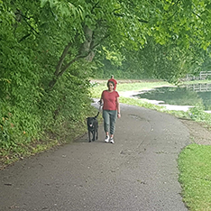
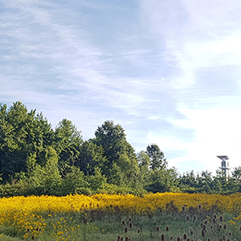
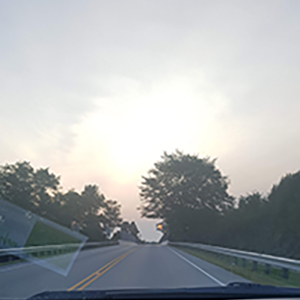

This summer I did a lot of fun new activities! I tried embroidery for the first time, which was really fun. I had recently rewatched Avatar: TLA, and I thought
it would be cool to make myself an Appa sweatshirt (seen above). I'm pretty happy with how it turned out! Embroidery is not as difficult or intensive to
pick up as knitting, so it was nice to see a result come out so quickly.
I started running again this summer as well. Surprisingly I have continued to wake up early and head to the park (in order to avoid any crowds + Covid).
One advantage is that the weather is really nice earlier in the morninig, and I was able to enjoy much more of the day.
  